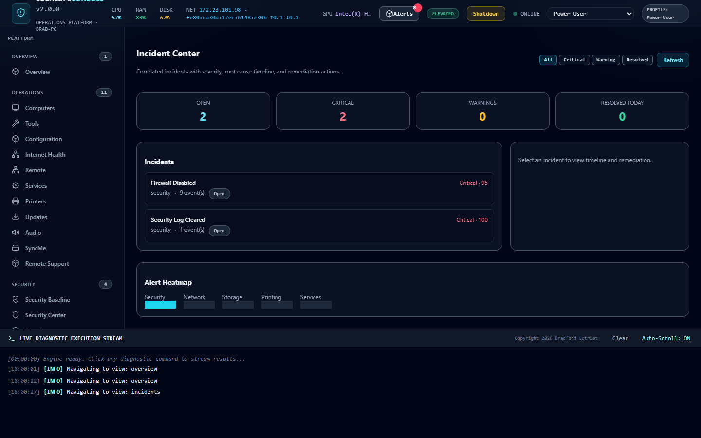
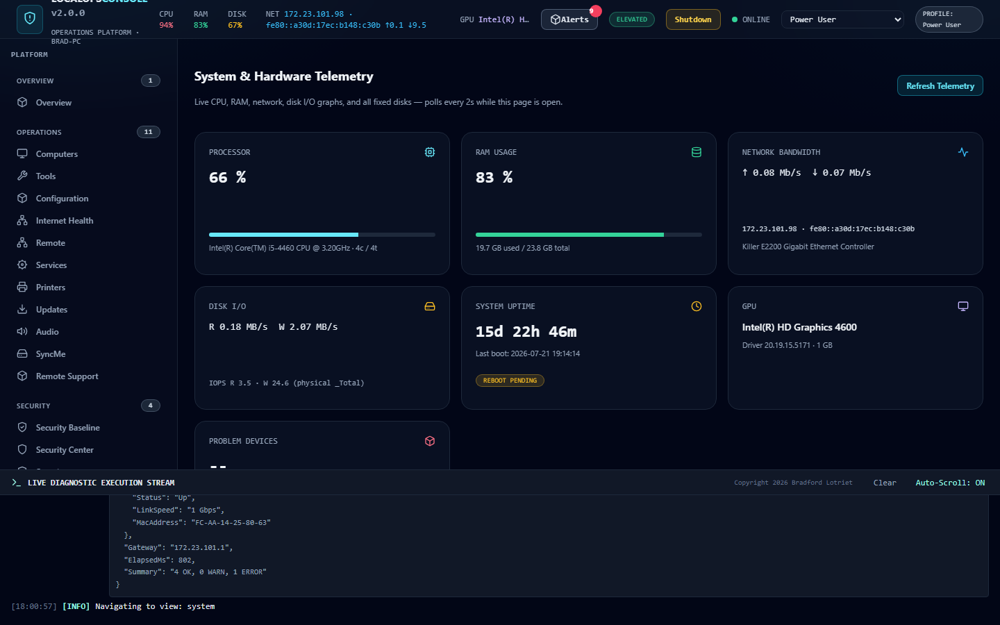

◎
Overview first
Open the console and immediately see health score, security posture, and active incidents — not a raw event dump.
v2.1.4 · Local-first · Offline-capable
LocalOpsConsole is a modular Windows Operations Platform for IT professionals, MSPs, and power users — diagnostics, Event Intelligence, incidents, security baseline, and safe remediation. Runs on the machine. No mandatory telemetry.
Not a pile of scripts — a platform shell with Overview, Incidents, Security, Health, and Operations modules that speak the same language.
Open the console and immediately see health score, security posture, and active incidents — not a raw event dump.
Continuous observation of Event Logs, services, Defender, updates, and more — normalized into incidents with timelines.
Network, Storage, Printers, Services, Updates, Security Baseline — each with inventory, diagnostics, remediation, and reporting.
Enterprise RMM and cloud portals are powerful — and often overkill, online-only, or expensive for local troubleshooting. LocalOpsConsole keeps the ops-center experience on the endpoint.
HttpListener + offline SPA. Bind to localhost. Work without internet. Optional outbound fleet agent when you need it.
Manifest validation, SHA-256 integrity, elevation checks, and auditable remediations. Invalid modules never run.
Live UI captures — Security, Incidents, and Operations. See all categories.



Critical and warning alerts with root-cause timeline, suggested remediation, and ack/resolve workflows.
Score Defender, Firewall, BitLocker, TPM, Secure Boot, UAC, SMBv1, RDP, WinRM, PowerShell logging, and more.
Config-driven playbooks — restart Spooler, verify, notify, close incident — always logged.
Optional LocalOps Agent for enroll, heartbeat, and remote scripts — without abandoning local-first defaults.
Placeholder testimonials — replace with real quotes as the community grows.
“Finally a local console that feels like an ops suite, not a script runner.”
— Desktop Support Lead (placeholder)
“Incident-first view means I stop digging through Event Viewer for every ticket.”
— MSP Engineer (placeholder)
“Integrity checks and admin gates make remediation safer to hand to helpdesk.”
— Systems Administrator (placeholder)
Portable ZIP · MIT license · Windows 10/11 · PowerShell 5.1+
No. The console runs entirely on the local machine. Updates and fleet features are optional.
Local diagnostics are the core. An optional LocalOps Agent supports fleet enroll/heartbeat for future centralized workflows.
No. Automation is opt-in per rule JSON. Privileged actions require elevation and are audited.
The project is MIT today. The site and architecture are ready to support commercial offerings later without changing the local-first core.